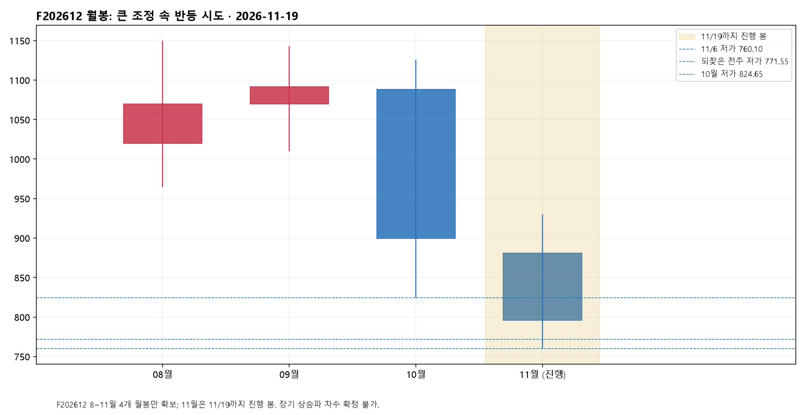
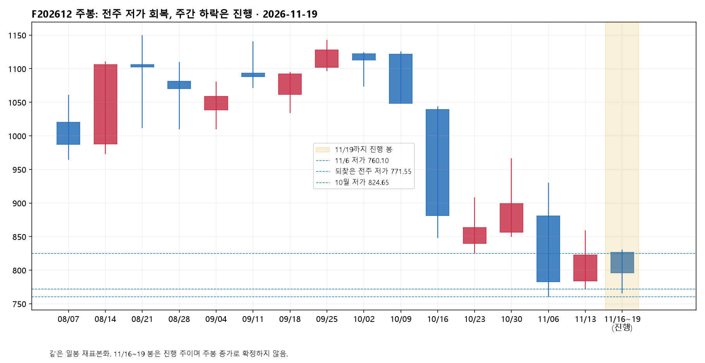
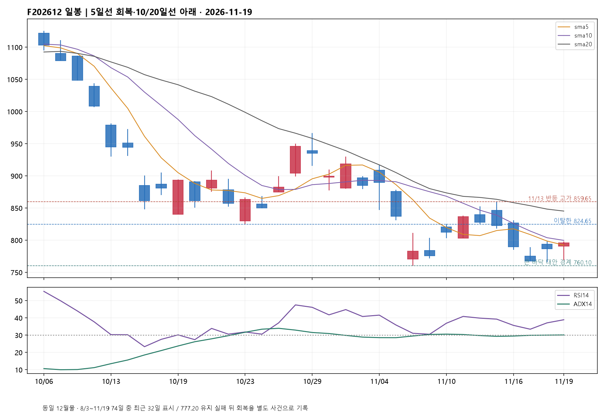
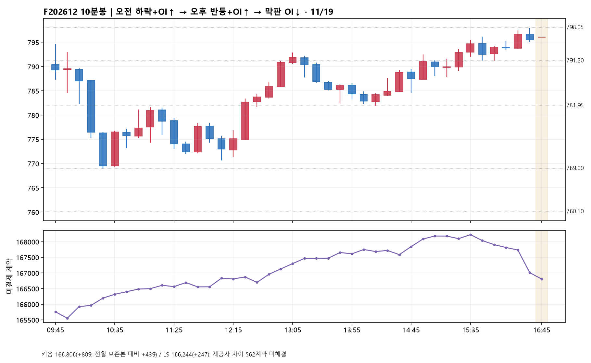
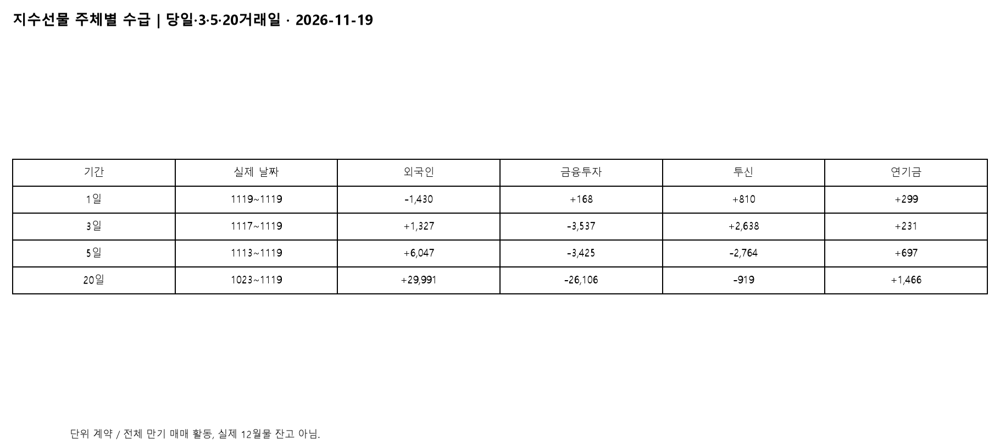
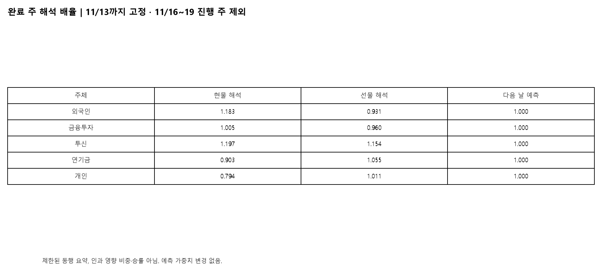
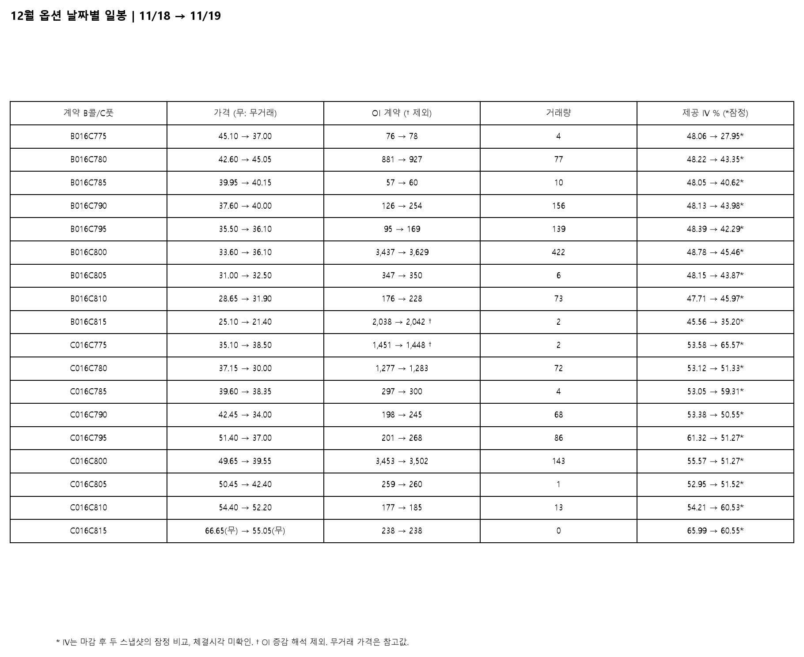

F202612 / A016C000 · 정규장 796.00 · OI 166,806 · 이후 야간 미반영
11/19 F202612 정규장 종가는 796.00(+1.21%)예요. 오전 769.00까지 밀린 뒤 전일 고점 798.05 바로 아래까지 회복해 단기 반등 지속에 무게를 두되, 월·주·일의 큰 조정이 끝났다고 보기는 이릅니다. 첫 눌림은 791.20~792.05예요. 791.20 위 10분봉 마감과 다음 눌림 재지지를 유지하고, 798.00~798.05를 10분봉 종가로 넘어 재지지하면 801.62~803.35 회복을 확인합니다. 791.20 이탈 후 재저항이면 789.10~787.35, 781.95까지 확인하며, 781.95 아래 마감·재저항은 오후 반등 구조 약화로 봅니다. 760.10 일봉 이탈·회복 실패는 큰 바닥 대안의 철회 조건으로 그대로 유지해요. 오늘 회복은 투신·연기금에 금융투자 선물 매수가 가세한 결과와 맞지만, 외국인 현물 매도·프로그램 순매도·선물 할인은 반대 근거입니다.
어제 제시했던 777.20 유지 조건은 오늘 오전 실패했고 실제 저점은 769.00이었습니다. 이 실패를 새로운 지지선으로 덮지 않습니다. 이후 오후에 어제의 회복 조건 789.00~791.30을 되찾고 793.95~798.05 구간에 들어온 것은 별개의 회복 사건이에요. 선호 가설은 11/13의 859.65에서 11/18의 765.75로 이어진 하락 뒤 반등이 진행되는 구조입니다. 세부 5파와 차수는 미확정이며, 이번 반등을 상승 3파로 확정하지 않습니다. 대안은 11/6의 760.10을 더 큰 바닥으로 두고 저점 형성이 이어지는 구조예요. 798.05 돌파·재지지와 일봉 802.95~803.35 회복은 대안을 강화하지만, 812.70 및 818.10~824.65 회복 전에는 상위 하락 전환을 끝냈다고 단정하지 않습니다. 760.10을 일봉으로 이탈한 뒤 반등도 회복에 실패하면 이 바닥 대안은 철회합니다. 859.65→765.75 반등 비율 38.2%인 801.62, 50%인 812.70, 61.8%인 823.78은 계산 참고값이며 실제 반응 가격과 독립된 표처럼 중복 가산하지 않습니다.
지수선물 전체 만기 기준 외국인은 오늘 1,430계약 순매도, 기관계는 1,279계약 순매수였어요. 기관 안에서는 투신 +810, 연기금 +299, 금융투자 +168계약으로 외국인 매도를 받는 방향이 세 주체에서 함께 나타났습니다. 기관 합계와 세부 주체를 다시 더하지 않습니다. 금융투자는 전일 -1,799계약에서 매수로 전환했고, 투신은 전일 +3,042에 이어 이틀 연속 순매수예요. 다만 투신의 최근 3일은 +2,638, 5일은 -2,764, 20일은 -919계약이므로 최근 방어·회복 매수와 더 긴 누적의 충돌이 남습니다. 외국인은 당일 매도와 달리 3일 +1,327, 5일 +6,047, 20일 +29,991계약 순매수입니다. 금융투자는 같은 기간 -3,537/-3,425/-26,106, 연기금은 +231/+697/+1,466계약이에요. 이 수치는 매매 활동이며 실제 보유 잔고나 신규 롱·숏 수량은 아닙니다.
현물 KOSPI는 5,137.89(+1.39%), KOSPI200은 799.57(+1.51%)로 상승했습니다. 외국인은 현물과 지수선물을 모두 순매도했는데 가격은 올랐고, 투신·금융투자는 두 시장에서 순매수였어요. 연기금은 현물 매도·지수선물 매수로 갈립니다. 현물 기관 순매수만으로 외국인 매도 전부를 받았다고 해석하지 않습니다. 같은 EOD의 KOSPI200 구성 200종목에서 삼성전자·SK하이닉스를 뺀 198종목을 보니 금융투자 순매수 종목 수는 전일 119→136개로 늘었지만 외국인 90→86, 투신 104→93, 연기금 107→97, 기관계 121→112개로 줄었습니다. 금융투자의 매수 확산은 확인되지만 시장 전체의 합의 확대는 아니에요. 연기금은 두 대형주를 매도하면서 나머지 198종목 합계는 순매수였고, SK하이닉스에서는 기타법인 순매수가 관측됩니다. 정확한 지수 기여도나 매수 사유는 확인하지 않았습니다. 외국인 주식선물도 당일 -39,129계약, 3·5·20일 모두 순매도로 지수선물 누적과 다릅니다. 프로그램은 당일·3·5·20일 모두 순매도이며 당일 비차익 매도가 차익 매수를 웃돌았습니다. 시장 베이시스 -3.57, 제공 이론 베이시스 +1.52로 차이는 -5.09포인트이며 전일 -2.84보다 벌어졌어요. 현물 16:30과 선물 16:45의 비동시 종가 비교이므로 즉시 차익거래나 선물 매도가 현물을 떨어뜨렸다는 인과로 해석하지 않습니다.
같은 키움 12월물 10분봉을 보면 09:55→10:25 가격 789.55→769.50, OI 165,553→166,197(+644)로 하락과 포지션 증가가 동반됐어요. 이 구간은 매도 압력 우위의 신규 위험 축적 해석에 맞지만 외국인의 신규 숏을 증명하지는 않습니다. 12:05→15:35에는 가격 772.95→794.70과 OI 166,834→168,227(+1,393)이 함께 올라 회복 중에도 참여가 확대됐습니다. 반등 전체를 기존 숏 청산으로만 설명하기 어려운 이유예요. 15:35→16:25 가격은 794.70→795.50인데 OI는 -1,216, 마지막 16:25→16:45에는 가격 +0.50과 OI -205로, 막판에는 노출 축소 속 가격이 유지됐습니다. 마지막 단일가와 연속 거래를 구분했으며, OI 감소만으로 어느 주체의 청산인지 확정하지 않습니다. 다음 장에서는 791.20~792.05 눌림 유지와 798.05 돌파 시 가격·OI·현물 매수의 조합을 다시 봅니다.
키움 정규장 OI는 166,806계약이고 오늘 다시 받은 전일값 165,997 대비 +809입니다. 어제 보존 원본의 전일 OI 166,367과 비교하면 +439로 달라요. LS 날짜 지정 일봉과 마감 후 원본 시세는 모두 166,244, 같은 LS 전일 165,997 대비 +247입니다. 두 제공사 모두 순증가지만 현재값 562계약 차이와 키움 전일 정정 370계약의 원인은 해결되지 않아 원본과 비교를 모두 보존했습니다. 이를 섞어 하나의 확정 증가량으로 만들지 않습니다. 키움 일봉 거래량 119,706과 정규 분봉 합계·LS 118,016 사이에도 1,690계약 차이가 있어 정확한 VWAP·체결 매물대 계산은 제외합니다. 차월 F202703은 종가 780.35, 거래량 39, OI 7,639계약으로 유동성이 얇습니다. 일별 OI 차이 +184가 거래량보다 커 집계범위 확인 전 증감 해석은 제외하며, 두 만기를 같은 연속 포지션으로 합산하지 않습니다.
0787 전체 만기 외국인 콜은 +737계약·+204억원으로 수량과 금액이 같은 매수 방향이었어요. 전일의 콜 수량 매수·금액 매도 충돌보다 강세 쪽 근거가 개선됐습니다. 반면 풋은 -1,481계약인데 금액은 +953억원으로 서로 달라 풋 헤지가 사라졌다고 볼 수 없습니다. 별도로 12/10 만기 18개 콜·풋의 11/18→11/19 일봉을 조회했습니다. 800콜은 가격 33.60→36.10, OI 3,437→3,629(+192), 790콜은 37.60→40.00, OI 126→254(+128)로 가격과 OI가 함께 증가했어요. 이는 해당 계약의 미결제 참여 확대를 동반한 상승이며 외국인 신규 콜 매수로 귀속할 근거는 아닙니다. 보존된 마감 후 제공 IV는 800콜 48.78→45.46%, 델타 0.4801→0.5152로, 기초자산 회복과 맞지만 변동성 프리미엄까지 급하게 비싸진 모습은 아니에요. 다만 체결별 시각이 없는 두 스냅샷의 잠정 비교로 확정 종가 IV 변화는 아닙니다. 800풋은 가격 49.65→39.55에 OI +49로, 새 풋 매도와 다른 헤지 수요를 구분할 수 없습니다. 대표 IV는 73.32→65.81, 콜 50.60→46.91, 풋 93.86→83.34로 낮아졌지만 이 값은 개별 행사가 IV와 다르며 만기 교체의 구성 영향도 있습니다. 815콜·775풋은 OI 증감이 거래량보다 커 해석에서 제외했고, 거래 없는 815풋 가격은 참고값으로만 남겼습니다.
오늘 11/19는 수능일 특별장으로 선물·비만기 옵션 09:45~16:45, 현물 10:00~16:30을 적용했습니다. 만기 도래 주간 옵션은 16:20 종료로 따로 구분합니다. 11월 월물 옵션은 11/12에 만료했고 이번 표의 12월물 옵션과 12월물 선물 만기는 12/10이에요. 따라서 오늘을 11월 월물 만기 전일이라고 해석하지 않습니다. 전체 만기 옵션 순매매에는 주간물과 다른 만기가 섞일 수 있어 이를 조회한 12월 18개 계약과 바로 연결하지 않습니다. 오늘 주간 만기 청산·헤지와 방향성 수요는 모두 가능한 설명이지만 계좌별 신규·청산 구분 및 잔고가 없어 확정하지 않습니다. 이후 19:00 시작 야간 가격은 이번 정규장 판단에 포함하지 않았으며, 다음 장에 같은 개별 계약의 회복 유지와 현물·프로그램 수급을 확인해야 합니다.
최근 영향 주체는 완료 주만 사용해 제한적으로 반영했어요. 11/13까지 확정된 5거래일과 이전 20거래일의 동행을 축소 반영한 현물 해석 배율은 투신 1.197·외국인 1.183·금융투자 1.005, 선물은 투신 1.154·연기금 1.055·금융투자 0.960·외국인 0.931입니다. 현재 11/16~19 진행 주는 가중치 산출에서 제외했습니다. 이는 인과 영향 비중이나 승률이 아니며 다음 날 예측 배율은 모두 1.000으로 유지합니다. 이번 창에서는 현물 외국인 수급과의 동행이 선물 외국인보다 강했지만 오늘은 외국인 매도에도 가격이 상승해 당일 신호가 충돌합니다. 10/12~11/19 29거래일 자료에서 외국인·투신 동반 매수와 상승 뒤 다음 날 상승은 현물 3/7, 선물 1/3이고, 동반 매도와 하락 뒤 하락은 현물 6/13, 선물 0/2입니다. 같은 기간 단순 전일 상승 뒤 상승 4/11, 하락 뒤 하락 9/17과 비교해도 작고 불안정한 표본이에요. 오늘은 외국인과 투신 방향이 다르므로 이 동반 신호의 조건에도 해당하지 않습니다. 관측 비율을 내일 확률이나 역매매 규칙으로 바꾸지 않습니다.
가격 구조는 F202612 개별 계약의 8/3~11/19 74개 일봉과 확보된 날짜별 정규 10분봉을 사용했습니다. 월·주봉은 같은 일봉에서 재표본화하며 11월과 11/16~19 주봉은 진행 봉입니다. 현물·지수선물 수급 비교는 10/12~11/19의 29거래일, 최근 3일은 11/17~19, 5일은 11/13~19, 20일은 10/23~11/19입니다. 9월 만기 이후 관찰창 9/11~11/19 46거래일의 전체 만기 지수선물 매매는 외국인 +30,279, 기관계 -28,881, 금융투자 -19,264, 투신 -6,523, 연기금 +1,437계약입니다. 이는 관찰창 내 순매매 합계로 실제 12월물 잔고·평단이 아닙니다. 개별 만기별 투자자 초기 잔고와 신규·청산 자료가 없어 현재 만기 실제 보유 누적은 판단 불가예요. 원천이 다른 기간을 이어 붙이지 않았으며 과거 공개본과 달라진 현물 정정값도 별도 보존했습니다.
신규 조회한 KOSPI·KOSPI200 일봉과 EOD 구성종목 수급을 보조 확인했습니다. KOSPI는 장중 4,963.61에서 5,137.89로 회복해 고가 마감했고 KOSPI200도 799.57로 고가 마감했어요. 이 회복은 선물 반등과 맞지만 현물 외국인·프로그램 순매도가 함께 사라진 것은 아닙니다. 기존 KOSPI·KOSDAQ·니케이·미국 다중 시간대 파일과 Squeeze·ADX 연구 신호는 기준일이 오래되어 이번 방향 판단에서 제외했습니다. 오늘 KOSDAQ·해외 차트까지 검증한 시장 전체 합의로 확대하지 않으며, 국내 선물의 실제 가격·OI와 분리합니다.

완료 10월 저가 824.65 아래에서 11월 796.00. 큰 흐름의 회복은 아직 확인되지 않았어요.

전주 완료 종가 822.35 대비 낮지만 이번 주 저가 765.75에서 796.00으로 반등했어요.

어제 제시했던 777.20 유지 조건은 오늘 오전 실패했고 실제 저점은 769.00이었습니다. 이 실패를 새로운 지지선으로 덮지 않습니다. 이후 오후에 어제의 회복 조건 789.00~791.30을 되찾고 793.95~798.05 구간에 들어온 것은 별개의 회복 사건이에요. 선호 가설은 11/13의 859.65에서 11/18의 765.75로 이어진 하락 뒤 반등이 진행되는 구조입니다. 세부 5파와 차수는 미확정이며, 이번 반등을 상승 3파로 확정하지 않습니다. 대안은 11/6의 760.10을 더 큰 바닥으로 두고 저점 형성이 이어지는 구조예요. 798.05 돌파·재지지와 일봉 802.95~803.35 회복은 대안을 강화하지만, 812.70 및 818.10~824.65 회복 전에는 상위 하락 전환을 끝냈다고 단정하지 않습니다. 760.10을 일봉으로 이탈한 뒤 반등도 회복에 실패하면 이 바닥 대안은 철회합니다. 859.65→765.75 반등 비율 38.2%인 801.62, 50%인 812.70, 61.8%인 823.78은 계산 참고값이며 실제 반응 가격과 독립된 표처럼 중복 가산하지 않습니다.

같은 키움 12월물 10분봉을 보면 09:55→10:25 가격 789.55→769.50, OI 165,553→166,197(+644)로 하락과 포지션 증가가 동반됐어요. 이 구간은 매도 압력 우위의 신규 위험 축적 해석에 맞지만 외국인의 신규 숏을 증명하지는 않습니다. 12:05→15:35에는 가격 772.95→794.70과 OI 166,834→168,227(+1,393)이 함께 올라 회복 중에도 참여가 확대됐습니다. 반등 전체를 기존 숏 청산으로만 설명하기 어려운 이유예요. 15:35→16:25 가격은 794.70→795.50인데 OI는 -1,216, 마지막 16:25→16:45에는 가격 +0.50과 OI -205로, 막판에는 노출 축소 속 가격이 유지됐습니다. 마지막 단일가와 연속 거래를 구분했으며, OI 감소만으로 어느 주체의 청산인지 확정하지 않습니다. 다음 장에서는 791.20~792.05 눌림 유지와 798.05 돌파 시 가격·OI·현물 매수의 조합을 다시 봅니다.

지수선물 전체 만기 기준 외국인은 오늘 1,430계약 순매도, 기관계는 1,279계약 순매수였어요. 기관 안에서는 투신 +810, 연기금 +299, 금융투자 +168계약으로 외국인 매도를 받는 방향이 세 주체에서 함께 나타났습니다. 기관 합계와 세부 주체를 다시 더하지 않습니다. 금융투자는 전일 -1,799계약에서 매수로 전환했고, 투신은 전일 +3,042에 이어 이틀 연속 순매수예요. 다만 투신의 최근 3일은 +2,638, 5일은 -2,764, 20일은 -919계약이므로 최근 방어·회복 매수와 더 긴 누적의 충돌이 남습니다. 외국인은 당일 매도와 달리 3일 +1,327, 5일 +6,047, 20일 +29,991계약 순매수입니다. 금융투자는 같은 기간 -3,537/-3,425/-26,106, 연기금은 +231/+697/+1,466계약이에요. 이 수치는 매매 활동이며 실제 보유 잔고나 신규 롱·숏 수량은 아닙니다.

최근 영향 주체는 완료 주만 사용해 제한적으로 반영했어요. 11/13까지 확정된 5거래일과 이전 20거래일의 동행을 축소 반영한 현물 해석 배율은 투신 1.197·외국인 1.183·금융투자 1.005, 선물은 투신 1.154·연기금 1.055·금융투자 0.960·외국인 0.931입니다. 현재 11/16~19 진행 주는 가중치 산출에서 제외했습니다. 이는 인과 영향 비중이나 승률이 아니며 다음 날 예측 배율은 모두 1.000으로 유지합니다. 이번 창에서는 현물 외국인 수급과의 동행이 선물 외국인보다 강했지만 오늘은 외국인 매도에도 가격이 상승해 당일 신호가 충돌합니다. 10/12~11/19 29거래일 자료에서 외국인·투신 동반 매수와 상승 뒤 다음 날 상승은 현물 3/7, 선물 1/3이고, 동반 매도와 하락 뒤 하락은 현물 6/13, 선물 0/2입니다. 같은 기간 단순 전일 상승 뒤 상승 4/11, 하락 뒤 하락 9/17과 비교해도 작고 불안정한 표본이에요. 오늘은 외국인과 투신 방향이 다르므로 이 동반 신호의 조건에도 해당하지 않습니다. 관측 비율을 내일 확률이나 역매매 규칙으로 바꾸지 않습니다.

0787 전체 만기 외국인 콜은 +737계약·+204억원으로 수량과 금액이 같은 매수 방향이었어요. 전일의 콜 수량 매수·금액 매도 충돌보다 강세 쪽 근거가 개선됐습니다. 반면 풋은 -1,481계약인데 금액은 +953억원으로 서로 달라 풋 헤지가 사라졌다고 볼 수 없습니다. 별도로 12/10 만기 18개 콜·풋의 11/18→11/19 일봉을 조회했습니다. 800콜은 가격 33.60→36.10, OI 3,437→3,629(+192), 790콜은 37.60→40.00, OI 126→254(+128)로 가격과 OI가 함께 증가했어요. 이는 해당 계약의 미결제 참여 확대를 동반한 상승이며 외국인 신규 콜 매수로 귀속할 근거는 아닙니다. 보존된 마감 후 제공 IV는 800콜 48.78→45.46%, 델타 0.4801→0.5152로, 기초자산 회복과 맞지만 변동성 프리미엄까지 급하게 비싸진 모습은 아니에요. 다만 체결별 시각이 없는 두 스냅샷의 잠정 비교로 확정 종가 IV 변화는 아닙니다. 800풋은 가격 49.65→39.55에 OI +49로, 새 풋 매도와 다른 헤지 수요를 구분할 수 없습니다. 대표 IV는 73.32→65.81, 콜 50.60→46.91, 풋 93.86→83.34로 낮아졌지만 이 값은 개별 행사가 IV와 다르며 만기 교체의 구성 영향도 있습니다. 815콜·775풋은 OI 증감이 거래량보다 커 해석에서 제외했고, 거래 없는 815풋 가격은 참고값으로만 남겼습니다.
2026-11-19T17:36:41.528770+09:00 · 조건부 해설, 자동 주문·비중 변경 아님